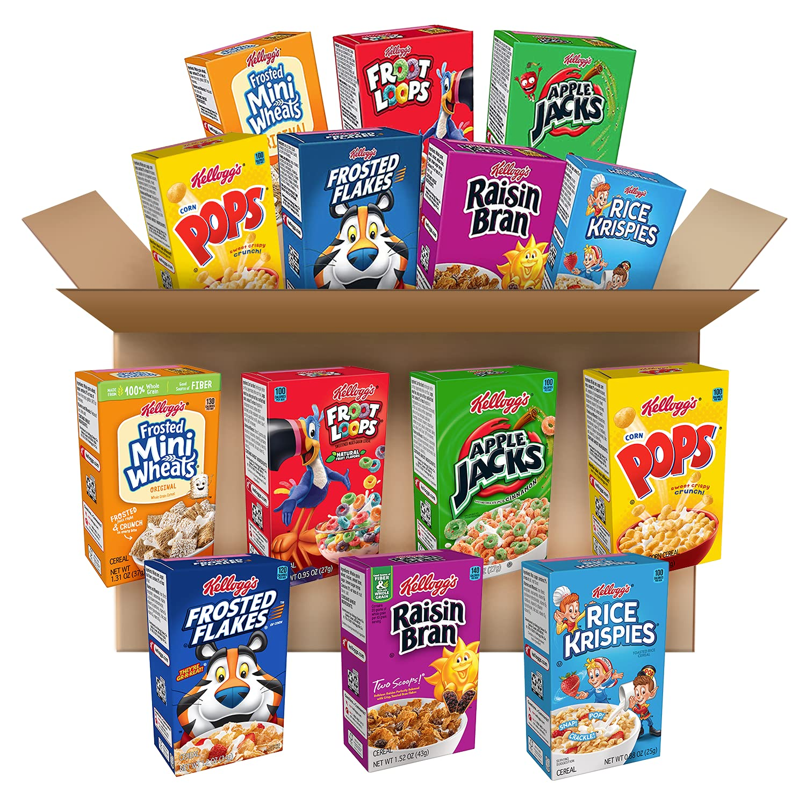

Can never go wrong with Cereal

A fulfilling bowl of cereal!
One can never go wrong with a bowl a cereal.
It can be ate at any time of day and will always hit the spot!
Ingredients
- Cereal of choice
- Milk of choice
- Optional: Fruit of choice
Directions
Disclaimer: This first step is controversial but is the only correct way to serve cereal.
- Pour in cereal of choice into bowl
- Pour in milk into bowl with cereal in it
- Optional: Add choice of cut up fruit